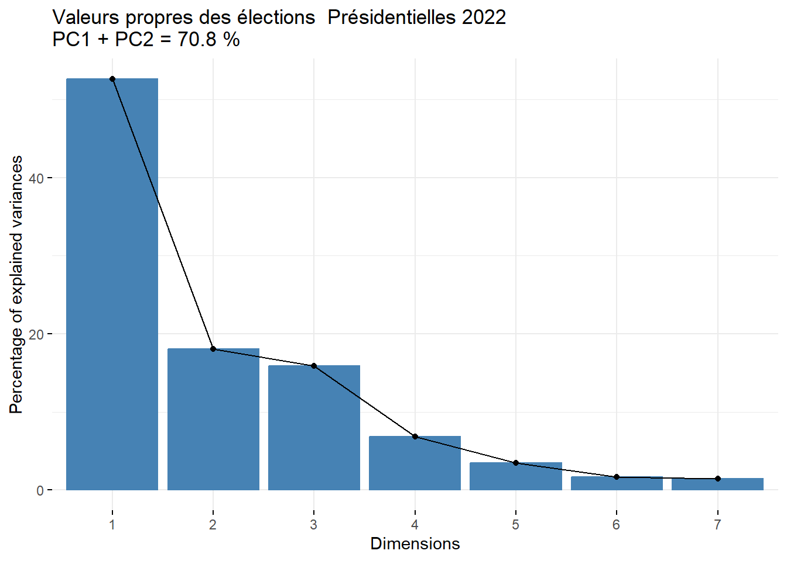
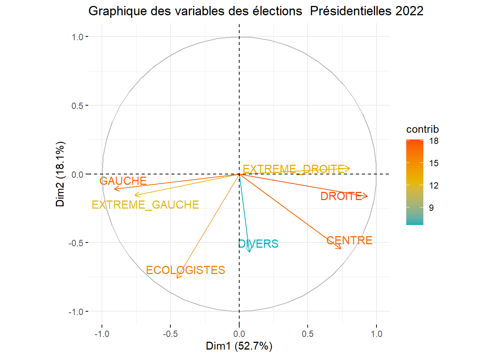
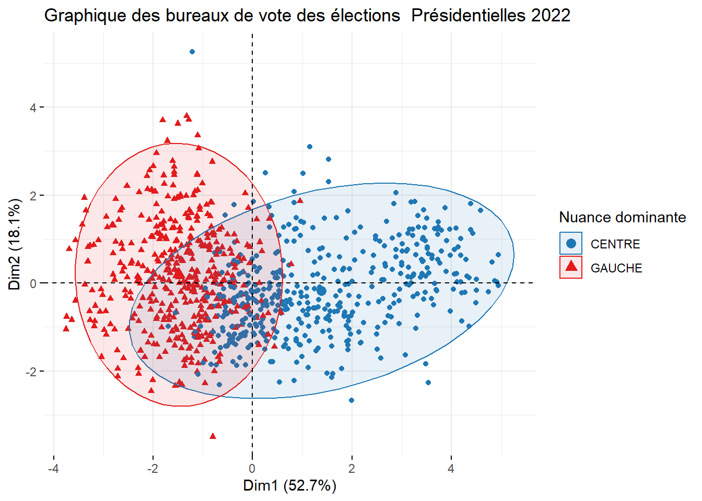
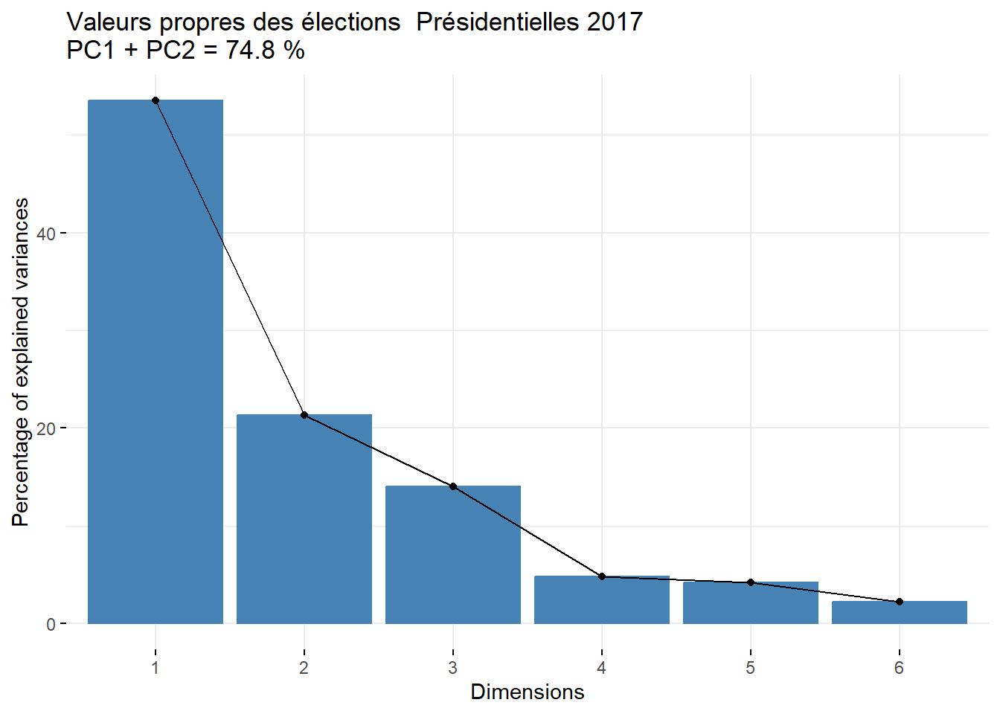
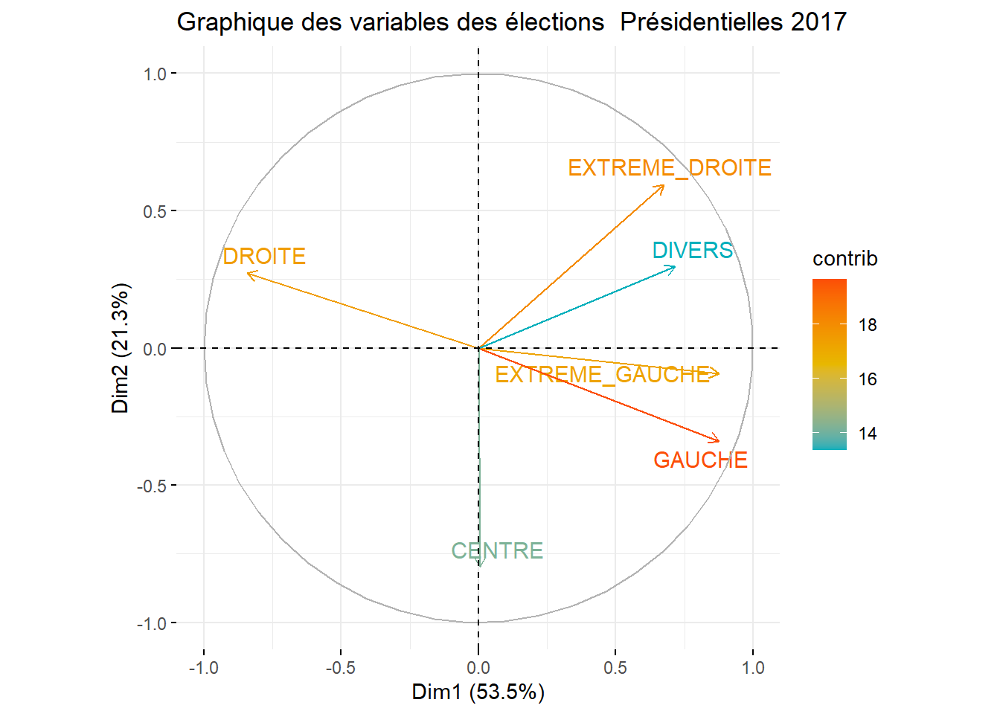
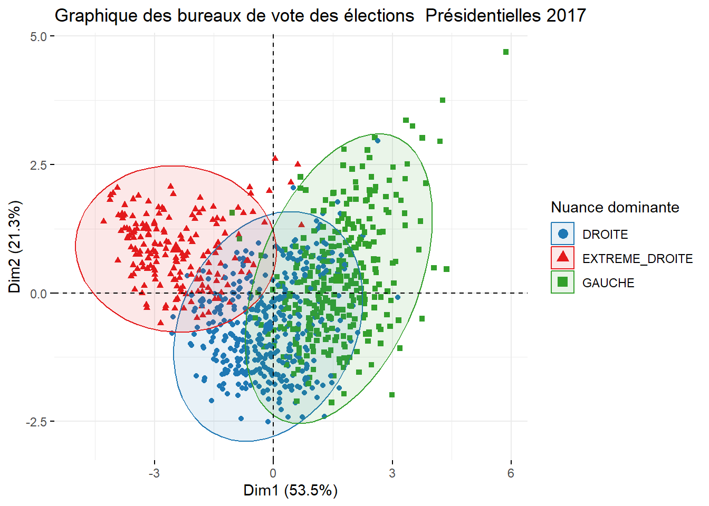
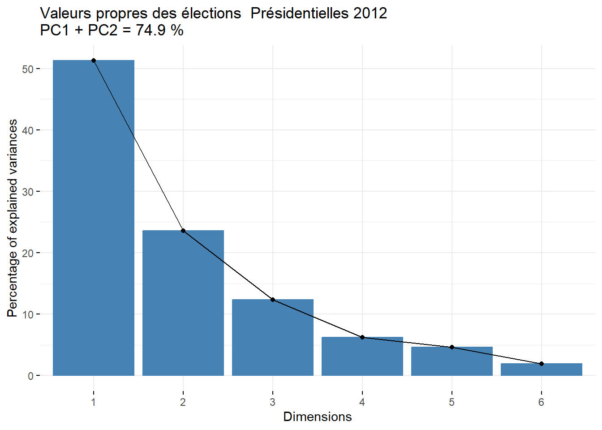
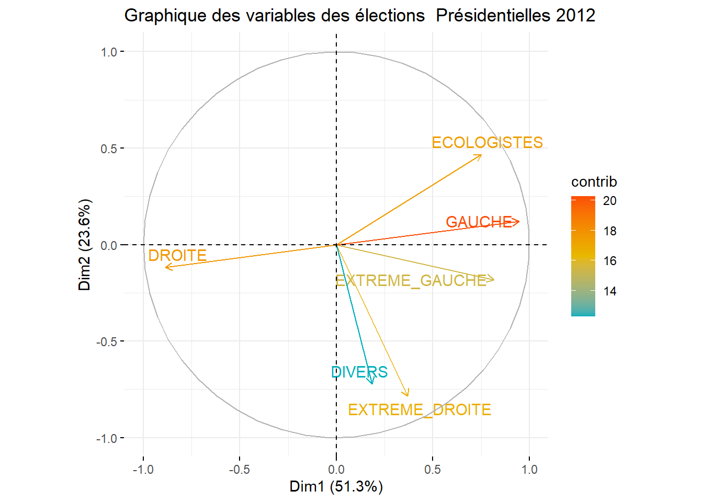
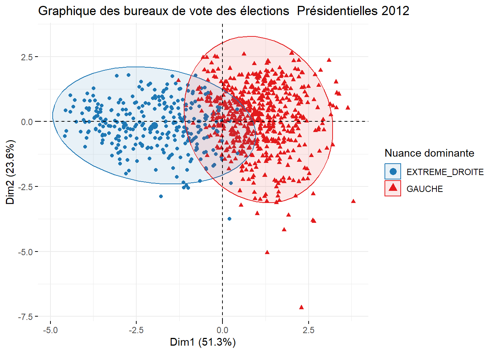

| Titre | Tours | Année |
|---|---|---|
| Européenne | 1 | 2009 |
| Européenne | 1 | 2014 |
| Européenne | 1 | 2019 |
| Européenne | 1 | 2024 |
| Présidentielle | 1 | 2007 |
| Présidentielle | 2 | 2007 |
| Présidentielle | 1 | 2012 |
| Présidentielle | 2 | 2012 |
| Présidentielle | 1 | 2017 |
| Présidentielle | 2 | 2017 |
| Présidentielle | 1 | 2022 |
| Présidentielle | 2 | 2022 |
| Régionale | 1 | 2010 |
| Régionale | 2 | 2010 |
| Régionale | 1 | 2015 |
| Régionale | 2 | 2015 |
| Régionale | 1 | 2021 |
| Régionale | 2 | 2021 |
| Municipale | 1 | 2008 |
| Municipale | 2 | 2008 |
| Municipale | 1 | 2014 |
| Municipale | 2 | 2014 |
| Municipale | 1 | 2020 |
| Municipale | 2 | 2020 |
| Législative | 1 | 2012 |
| Législative | 2 | 2012 |
| Législative | 1 | 2017 |
| Législative | 2 | 2017 |
| Législative | 1 | 2022 |
| Législative | 2 | 2022 |
| Législative | 1 | 2024 |
| Législative | 2 | 2024 |
Analyse multivariée des élections présidentielles : Méthodes PCA et CCA
Introduction
Ce rapport présente une analyse multivariée des élections présidentielles parisiennes de 2007 à 2022 en mobilisant deux méthodes statistiques principales : l’Analyse en Composantes Principales (PCA) et l’Analyse des Corrélations Canoniques (CCA).
0.1 Données et méthodes
L’étude porte sur les résultats par bureau de vote parisien, regroupés en sept familles politiques : extrême gauche, gauche, écologistes, centre, droite, extrême droite et divers.
Notre pipeline comprend :
Extraction et nettoyage des données électorales (formats parquet/Excel)
Analyse PCA pour explorer la structure politique de chaque élection
Analyse CCA pour mesurer la stabilité électorale entre scrutins consécutifs
Les analyses CCA permettent d’identifier les bureaux de vote les plus stables/instables et de quantifier l’évolution du paysage électoral parisien sur quinze années.
1 Extraction des données électorales
1.1 Sources et formats de données
Les données électorales parisiennes proviennent de différentes sources institutionnelles (OpenData Paris, data.gouv.fr) et se présentent sous deux formats principaux :
Format Parquet : Elections européennes, présidentielles et régionales
Format Excel : Elections municipales et législatives
Cette hétérogénéité des formats nécessite le développement d’un pipeline d’extraction adaptatif capable de traiter chaque type de fichier avec les outils appropriés.
1.2 Processus d’extraction
Notre pipeline d’extraction s’adapte automatiquement aux deux formats de données rencontrés :
Pour les fichiers Parquet, le package arrow est particulièrement adapté à ce format optimisé pour les données volumineuses. Les noms de fichiers sont standardisés pour harmoniser la nomenclature.
Pour les fichiers Excel, le package readxl permet de traiter les données municipales et législatives. Le processus comprend à corriger des noms de colonnes, la conversion des colonnes au format approprié quand nécessaire et la fusion de multiples fichiers Excel.
2 Nettoyage des données
2.1 Harmonisation des variables et structure
Les données extraites présentent plusieurs défis structurels nécessitant une standardisation avant analyse.
Suppression des colonnes non-pertinentes : Les données brutes contiennent de nombreuses variables administratives et métadonnées non-essentielles pour l’analyse électorale (dates de création, identifiants géographiques redondants, informations de géolocalisation). Ces colonnes sont systématiquement supprimées pour alléger les datasets.
Harmonisation des noms : Les tables présentent des noms de colonnes différents pour des concepts identiques.
Gestion des valeurs manquantes : Toutes les valeurs manquantes (NA) sont remplacées par des zéros, correspondant logiquement à l’absence de votes pour un candidat dans un bureau donné.
2.2 Classification en familles politiques
2.2.1 Nécessité du regroupement
Les données originales sont structurées par candidat individuel, rendant les comparaisons difficiles en raison des changements de personnalités politiques. Un regroupement en fonction de leur partie politique est donc nécessaire.
2.2.2 Processus de mapping
Le mapping candidat à famille politique s’avère particulièrement complexe à réaliser manuellement. Les ressources en ligne fiables étant rares et souvent incomplètes, nous avons eu recours à une intelligence artificielle pour générer des fichiers CSV de correspondance sous notre supervision.
2.3 Sauvegarde standardisée
Chaque élection nettoyée est sauvegardée au format Parquet dans le répertoire DataClean/, produisant des fichiers homogènes avec une structure identique facilitant les analyses ultérieures. Le processus transforme des données hétérogènes par candidat en datasets cohérents par famille politique.
Pour illustrer le processus de nettoyage, voici un exemple concret avec les données des élections présidentielle 2022 du 1er tour :”
# A tibble: 6 × 37
id_bvote type_election annee numero_tour date_tour circ_bv quartier_bv
<chr> <chr> <date> <int> <date> <chr> <chr>
1 18-45 Présidentielle 2022-01-01 1 2022-04-10 03 69
2 18-66 Présidentielle 2022-01-01 1 2022-04-10 18 70
3 16-62 Présidentielle 2022-01-01 1 2022-04-10 04 64
4 16-66 Présidentielle 2022-01-01 1 2022-04-10 04 64
5 18-40 Présidentielle 2022-01-01 1 2022-04-10 03 69
6 20-69 Présidentielle 2022-01-01 1 2022-04-10 06 79
# ℹ 30 more variables: arr_bv <chr>, sec_bv <chr>, num_bureau <int>,
# nb_procuration <dbl>, nb_inscrit <dbl>, nb_emargement <dbl>,
# nb_votant <int>, nb_vote_blanc <dbl>, nb_vote_nul <dbl>, nb_exprime <dbl>,
# arthaud_nathalie <int>, roussel_fabien <dbl>, macron_emmanuel <dbl>,
# lassalle_jean <dbl>, le_pen_marine <dbl>, zemmour_eric <dbl>,
# melenchon_jean_luc <dbl>, hidalgo_anne <dbl>, jadot_yannick <dbl>,
# pecresse_valerie <int>, poutou_philippe <dbl>, …Voici le dataset après application du processus de nettoyage :
# A tibble: 6 × 18
id_bvote nb_procuration nb_inscrit nb_emargement nb_votant nb_bl_nul
<chr> <dbl> <dbl> <dbl> <int> <dbl>
1 18-45 42 1611 1129 1129 15
2 18-66 64 1426 1132 1132 10
3 16-62 77 1523 1230 1233 12
4 16-66 57 1246 944 944 8
5 18-40 78 1591 1285 1286 23
6 20-69 86 1550 1205 1205 18
# ℹ 12 more variables: nb_exprime <dbl>, EXG <dbl>, COM <dbl>, ENS <dbl>,
# REG <dbl>, RN <dbl>, REC <dbl>, LFI <dbl>, SOC <dbl>, ECO <dbl>, LR <int>,
# DSV <dbl>3 Analyses statistiques multivariées
3.1 Analyse en Composantes Principales (PCA)
3.1.1 Objectif et méthodologie
L’Analyse en Composantes Principales permet de réduire la dimensionnalité des données électorales tout en conservant l’information essentielle. Appliquée aux scores des sept familles politiques par bureau de vote, elle révèle les structures sous-jacentes du vote parisien.
La méthodologie consiste à :
Calculer les scores par famille politique pour chaque bureau de vote
Appliquer une PCA avec standardisation des variables
Analyser la variance expliquée par les composantes principales
Visualiser appropriées
Dans notre cas, nous appliquons la PCA aux élections présidentielles de 2022, 2017, 2012 pour analyser l’évolution des structures politiques sur quinze années.
3.1.2 Résultat par élection
Élection présidentielle 2022



La PCA révèle que les deux premières composantes expliquent 70,8% de la variance totale (PC1 = 53%, PC2 = 18%).
Composante 1 (53%) : Oppose clairement gauche/extrême-gauche/écologistes (scores négatifs) au centre/droite/extrême-droite (scores positifs). Cet axe reproduit le clivage idéologique classique gauche-droite.
Composante 2 (18%) : Distingue l’extrême-droite (scores positifs) au reste (scores négatifs) )
La projection des bureaux de vote montre une séparation nette : les bureaux dominés par le centre (points bleus) se concentrent à droite, tandis que ceux dominés par la gauche (points rouges) se situent à gauche, avec très peu de chevauchement entre les ellipses.
Élection présidentielle 2017



La PCA explique 74,8% de la variance totale avec les deux premières composantes (PC1 = 53,5%, PC2 = 21,3%).
Composante 1 (53,5%) : Oppose la droite traditionnelle (LR/Fillon) (scores négatifs) au bloc mixte gauche + extrême-droite + divers (scores positifs). Cet axe ne suit pas le clivage gauche-droite classique mais distingue la droite modérée du reste du spectre politique.
Composante 2 (21,3%) : Affine le vote “radical” en distinguant l’extrême-droite FN (scores positifs élevés) de la gauche modérée/centre (scores négatifs).
Le nuage révèle trois clusters bien distincts avec des ellipses très séparées : droite classique LR/Fillon (PC1 < 0), gauche modérée PS/LFI/Hamon (PC1 < 0, PC2 > 0), et extrême-droite FN (PC1 > 0). Cette configuration illustre un paysage politique structuré en trois îlots nets plutôt qu’un clivage gauche-droite traditionnel comme évoqué précedement.
Élection présidentielle 2012



Élection présidentielle 2012 La PCA explique 74,9% de la variance totale avec les deux premières composantes (PC1 = 51,3%, PC2 = 23,6%).
Composante 1 (51,3%) : Oppose la droite modérée (UMP/Sarkozy) (scores négatifs) au bloc gauche + écologistes + extrêmes + divers (scores positifs). Cet axe ne reproduit pas le clivage gauche-droite classique mais isole la droite modérée de l’ensemble du reste de l’échiquier politique.
Composante 2 (23,6%) : Affine chaque bloc en distinguant les bureaux écologie/gauche modérée (scores positifs) des bureaux au reste des parties (scores négatifs).
Le nuage montre une séparation horizontale : tous les bureaux “gauche dominante” (points rouges) se situent à droite (PC1 > 0), tandis que tous les bureaux “extrême-droite dominante” (points bleus) se placent à gauche (PC1 < 0)
3.1.3 Interprétation des structures politiques
Les analyses PCA révèlent une évolution majeure du paysage politique parisien :
2012 : Structure classique avec isolation de la droite modérée (UMP) face au reste de l’échiquier politique.
2017 : Recomposition en trois îlots distincts - droite traditionnelle (LR), gauche modérée (PS/LFI), et extrême-droite (FN) - illustrant l’éclatement du système politique traditionnel.
2022 : Retour à une bipolarisation centre (Macron) versus gauche élargie, avec l’extrême-droite intégrée comme nuance verticale plutôt que comme bloc autonome.
Cette évolution montre le passage d’un clivage gauche-droite classique (2012) vers une triangulation politique (2017) puis vers une nouvelle bipolarisation centre-gauche (2022)
3.1.4 Rapprochement Centre-Droite en 2022
3.1.5

L’analyse suggère un retour vers un clivage similaire à 2012. Le graphique des variables PCA montre la proximité du centre et de la droite sur PC1, qui structure l’opposition gauche-droite. La matrice de corrélations confirme cette observation avec un coefficient de 0,75 entre ces deux familles politiques.
Cette forte corrélation indique une convergence électorale centre-droite rappelant les dynamiques de 2012, interrogeant ainsi l’évolution du paysage politique parisien.
3.2 Analyse des Corrélations Canoniques (CCA)
3.2.1 Objectif et méthodologie
L’Analyse des Corrélations Canoniques mesure la stabilité électorale en comparant les bureaux de vote entre deux élections consécutives. Elle identifie les bureaux de vote ayant maintenu des comportements électoraux cohérents versus ceux ayant connu des basculements significatifs.
La méthodologie comprend :
Normalisation : Conversion des scores en pourcentages par bureau de vote
Jointure : Jointure naturel des données par identifiant de bureau (id_bvote)
CCA : Calcul des corrélations canoniques et scores canoniques
Identification : Bureaux instables
3.2.2 Résultats des comparaisons temporelles
Stabilité 2017-2022

Table: Top 10 des bureaux les plus instables
|Bureau de vote | Distance diagonale| Score 2022| Score 2017|
|:--------------|------------------:|----------:|----------:|
|13-33 | 26.01165| 16.87902| -9.132635|
|20-29 | 25.65573| 17.07589| -8.579833|
|17-1 | 25.65475| 18.33011| -7.324638|
|18-27 | 25.64897| 17.26387| -8.385092|
|13-42 | 25.62823| 16.85094| -8.777288|
|10-16 | 25.61985| 16.71621| -8.903642|
|14-52 | 25.61947| 17.35895| -8.260528|
|15-64 | 25.61376| 18.59188| -7.021883|
|13-3 | 25.61335| 17.28323| -8.330121|
|18-5 | 25.60701| 17.46858| -8.138429|La corrélation canonique de 0,992 révèle une fidélité électorale exceptionnelle : la quasi-totalité des bureaux maintient un positionnement cohérent sur l’axe gauche-droite entre les deux scrutins.
Le nuage de points s’aligne parfaitement sur la diagonale, confirmant que les bureaux conservent leur position relative. Dans cette analyse, les scores faibles correspondent aux profils de gauche (coefficients CCA négatifs pour PS/LFI) et les scores élevés aux profils centre-droite (coefficients CCA positifs pour LR/RN/En Marche) - cette convention étant déterminée par l’algorithme CCA.
On constate que les bureaux instable se caractérisés par un basculement gauche centre-droite : scores 2017 très négatifs versus scores 2022 très positifs.
Le 13e arrondissement concentre les plus fortes instabilités avec 3 bureaux dans le top 10, dont le bureau le plus instable (13-33). Cela représente des “poches de bascule”.

Table: Top 10 des bureaux les plus instables
|Bureau de vote | Distance diagonale| Score 2017| Score 2012|
|:--------------|------------------:|----------:|----------:|
|17-61 | 4.602078| 6.248552| 1.646474|
|17-15 | 3.694057| 5.591578| 1.897521|
|17-63 | 3.440543| 5.940505| 2.499962|
|17-14 | 3.303613| 5.411394| 2.107781|
|17-12 | 3.275898| 5.119594| 1.843696|
|17-13 | 3.248688| 4.738446| 1.489758|
|17-6 | 3.206055| 5.054208| 1.848153|
|17-62 | 3.113680| 6.124483| 3.010803|
|9-24 | 2.979646| 4.263810| 1.284164|
|16-35 | 2.977137| 6.763201| 3.786064|La corrélation canonique de 0,949 indique une forte stabilité électorale entre ces deux scrutins.
Le nuage de points se concentre majoritairement sur la diagonale, confirmant que les bureaux conservent leur positionnement relatif sur l’axe gauche-droite. Cependant, la stabilité est légèrement moindre qu’en 2017-2022.
Les 10 bureaux les plus instables présentent tous un basculement gauche → centre-droite : scores 2012 faibles (profil très à gauche/extrême) versus scores 2017 élevés (profil centre-droite). Le 17e arrondissement domine avec plusieurs bureaux instables, illustrant des mutations locales où d’anciens bastions de gauche se sont convertis en zones centre-droite.
3.3 Synthèse générale : Une méthodologie robuste pour comprendre les dynamiques électorales
1. Validation méthodologique Cette analyse démontre l’efficacité des méthodes de factorisation matricielle (SVD/PCA/CCA) pour l’analyse électorale :
PCA : révèle les structures politiques et leur évolution temporelle
CCA : quantifie précisément la stabilité électorale entre scrutins
Pipeline de nettoyage : harmonise les données multi-temporelles
2. Découvertes sur le paysage politique parisien (2012-2022)
Évolution structurelle en trois phases :
2012 : Bipolarisation traditionnelle (droite modérée vs bloc gauche/écolo)
2017 : Tripartition politique (LR, PS/LFI, FN) - éclatement du système
2022 : Nouvelle bipolarisation (centre macroniste vs gauche élargie)
Stabilité paradoxale :
Fidélité globale exceptionnelle (corrélations 0,949 et 0,992)
Mais recompositions géographiquement concentrées (13e, 17e arrondissements)
Direction unique des basculements : gauche → centre-droite
4 Appendix
library(CCA)
library(tidyverse)
library(arrow)
library(corrplot)
library(knitr)
library(factoextra)
library(readxl)
#Pour le moment je cherche uniquement les elections Europenne, Présidentielle et Régionalme car se sont les seuls qui sont sous le format parquet
parquet_dir <- "Data/Election/parquet"
parquet_files <- list.files(parquet_dir, full.names = TRUE)
#Variable qui va permettre de socker toutes nos dataset
all_elections <- list()
for (file in parquet_files) {
file_name <- tools::file_path_sans_ext(basename(file))
clean_name <- file_name %>%
str_remove("elections-") %>%
str_replace("1ertour","1t") %>%
str_replace("2emetour","2t") %>%
str_replace_all("-","_")
data <- read_parquet(file)
all_elections[[clean_name]] <- data
}
# Fonction pour nettoyer les noms et prénoms
cleaning_name <- function(text, type = "person") {
if (is.na(text) || is.null(text) || text == "") return("")
text_clean <- str_to_lower(text)
text_clean <- str_replace_all(text_clean, "[àáâãäå]", "a")
text_clean <- str_replace_all(text_clean, "ç", "c")
text_clean <- str_replace_all(text_clean, "[èéêë]", "e")
text_clean <- str_replace_all(text_clean, "[ìíîï]", "i")
text_clean <- str_replace_all(text_clean, "ñ", "n")
text_clean <- str_replace_all(text_clean, "[òóôõöø]", "o")
text_clean <- str_replace_all(text_clean, "[ùúûü]", "u")
text_clean <- str_replace_all(text_clean, "[ýÿ]", "y")
text_clean <- str_replace_all(text_clean, "[^a-z]", "_")
if (type == "column") {
text_clean <- str_replace_all(text_clean, "[ -]", "_")
text_clean <- str_replace_all(text_clean, "[ \\-'\"()\\[\\]]", "_")
}
text_clean <- str_replace_all(text_clean, "_{2,}", "_")
text_clean <- str_remove_all(text_clean, "^_|_$")
return(text_clean)
}
#Fonction permettant de convertir en int
convert_to_numeric <- function(x) {
result <- as.numeric(as.character(x))
result[is.na(result)] <- 0
return(result)
}
#Fonction permettant l'extractions des fichiers excel
extract_xls <- function(base_dir){
new_data <- list()
dir_muni <- list.dirs(base_dir, full.names = FALSE, recursive = FALSE)
for(dir in dir_muni){
dir_path <- file.path(base_dir,dir)
excel_files <- list.files(dir_path, full.names = TRUE)
regroup <- list()
for(file in excel_files){
data <- read_excel(file,col_types = "text")
file_name <- basename(file)
regroup[[file_name]] <- data
}
#Leger préparation des collones
all_excel <- bind_rows(regroup)
names(all_excel) <- sapply(names(all_excel), function(x) cleaning_name(x, type = "column"), USE.NAMES = FALSE)
#Supprésion des colonnes vides
empty_cols <- which(names(all_excel) == "" | is.na(names(all_excel)))
if(length(empty_cols) > 0) {
all_excel <- all_excel[, -empty_cols]
}
#Convertion des colonnes
columns_to_ignore <- c("id_bvote", "scrutin", "annee", "date")
columns_to_convert <- setdiff(names(all_excel), columns_to_ignore)
all_excel <- all_excel %>%
mutate(across(all_of(columns_to_convert), convert_to_numeric))
new_data[[dir]] <- all_excel
}
return(new_data)
}
#Rajout dans notre liste all_elections
muni_data <- extract_xls("Data/Election/Municipale")
legi_data <- extract_xls("Data/Election/Legislative")
all_elections <- c(all_elections, muni_data, legi_data)
# Extraction des informations depuis all_elections
elections_info <- data.frame(
titre = character(),
tours = numeric(),
annee = numeric()
)
for(name in names(all_elections)) {
if(grepl("presidentiel", name, ignore.case = TRUE)) {
type <- "Présidentielle"
} else if(grepl("europeennes", name, ignore.case = TRUE)) {
type <- "Européenne"
} else if(grepl("muni", name, ignore.case = TRUE)) {
type <- "Municipale"
} else if(grepl("legi", name, ignore.case = TRUE)) {
type <- "Législative"
} else if(grepl("regional", name, ignore.case = TRUE)) {
type <- "Régionale"
} else {
type <- "Autre"
}
annee <- as.numeric(str_extract(name, "\\d{4}"))
if(grepl("_1t|_2t", name)) {
tours <- ifelse(grepl("_2t", name), 2, 1)
} else {
tours <- 1
}
elections_info <- rbind(elections_info,
data.frame(type, tours,annee))
}
kable(elections_info,
col.names = c("Titre", "Tours", "Année"),
caption = "Elections extraites et analysées")
admin_cols_possible <- c(
"id_bv", "num_bureau", "id_arrondissement", "arr", "secteur", "quartier",
"nb_inscr", "nb_votant", "nb_exprim", "nb_bl_nul", "nb_blanc", "nb_nul",
"nb_vote_blanc", "nb_vote_nul", "nb_emarg","nb_procu",
"circ_legislative","type_election"
)
find_csv_file <- function(election_name, nuances_dir) {
# D'abord essayer le nom exact
exact_path <- file.path(nuances_dir, paste0(election_name, ".csv"))
if (file.exists(exact_path)) {
return(exact_path)
}
base_name <- gsub("_[12]?t$|_t[12]$", "", election_name)
base_path <- file.path(nuances_dir, paste0(base_name, ".csv"))
if (file.exists(base_path)) {
return(base_path)
}
return(NULL)
}
#Mapping des tables
mapping <- function(election_data, nuance_file_path, election_name) {
candidats_nuances <- read_csv(nuance_file_path, show_col_types = FALSE)
cols_candidats <- names(election_data)[!names(election_data) %in% admin_cols_possible]
election_new <- election_data
for (col_candidat in cols_candidats) {
# Trouver la nuance correspondante
nuance_candidat <- candidats_nuances$code_nuance[candidats_nuances$nom_prenom == col_candidat]
if (length(nuance_candidat) > 0) {
nuance <- nuance_candidat[1]
# Vérifier si une colonne avec cette nuance existe déjà
if (nuance %in% names(election_new)) {
# Additionner les valeurs
election_new[[nuance]] <- election_new[[nuance]] + election_new[[col_candidat]]
# Supprimer l'ancienne colonne candidat
election_new[[col_candidat]] <- NULL
} else {
# Renommer la colonne
names(election_new)[names(election_new) == col_candidat] <- nuance
}
}
}
return(election_new)
}
head(all_elections[["presidentielles_2022_1t"]])
# Nettoyage de chaque élection
for(name in names(all_elections)){
data <- all_elections[[name]]
#On fussionne les votes nuls et blancs dans les data où elles sont séparées
blanc <- any(str_detect(names(data),"nb_bl$|nb_blanc$|nb_vote_blanc$"))
exprim <-any(str_detect(names(data),"nb_exprim$"))
if(blanc){
blanc_col <- names(data)[str_detect(names(data), "nb_bl$|nb_blanc$|nb_vote_blanc$")][1]
nul_col <- names(data)[str_detect(names(data), "nb_nul$|nb_vote_nul$")][1]
data <- data %>%
mutate(
nb_bl_nul = as.numeric(!!sym(blanc_col)) + as.numeric(!!sym(nul_col))
) %>%
select(-!!sym(blanc_col), -!!sym(nul_col)) %>%
relocate(nb_bl_nul, .after = nb_votant)
}
if(exprim){
exprim_col <- names(data)[str_detect(names(data), "nb_exprim$")][1]
data <- data %>%
rename(nb_exprime = !!sym(exprim_col))
}
# On enlève les colonnes qu'on juge inutiles pour notre analyse en effet id_bvote contient toutes les informations sur l'emplacement du bureau de vote
cols_to_remove <- c("date","created_user", "last_edited_user",
"last_edited_date", "created_date",
"st_perimeter_shape","st_area_shape","nb_emarg",
"scrutin","circ_bv","quartier_bv","sec_bv",
"numero_tour","type_election","date_tour","arr_bv",
"tour","annee","num_circ","num_quartier","num_arrond",
"num_bureau","geo_shape","geo_point_2d")
data <- data %>%
select(-any_of(cols_to_remove))
# Convertir tous les NA en 0
data <- data %>%
mutate(across(where(is.numeric), ~replace_na(.x, 0))) %>%
mutate(across(where(is.character), ~replace_na(.x, "0")))
# Chercher le fichier CSV de nuances correspondant
csv_file_path <- find_csv_file(name, "Data/Nuance")
if (!is.null(csv_file_path)) {
data <- mapping(data, csv_file_path, name)
}
all_elections[[name]] <- data
# Sauvegarder le résultat final
file_path <- file.path("DataClean", paste0(name, ".parquet"))
write_parquet(data, file_path)
}
head(all_elections[["presidentielles_2022_1t"]])
#On trie par nuance politique
familles_nuance <- list(
"EXTREME_GAUCHE" = c("EXG"),
"GAUCHE" = c("COM", "SOC","LFI"),
"ECOLOGISTES" = c("ECO"),
"CENTRE" = c("ENS"),
"DROITE" = c("LR","DVD"),
"EXTREME_DROITE" = c("RN", "REC"),
"DIVERS" = c("DSV", "REG")
)
#Calcule des scores pour l'ensemble des parties
score <- function(data, familles){
scores_familles <- data %>%
mutate(
EXTREME_GAUCHE = rowSums(select(., any_of(familles$EXTREME_GAUCHE)), na.rm = TRUE),
GAUCHE = rowSums(select(., any_of(familles$GAUCHE)), na.rm = TRUE),
ECOLOGISTES = rowSums(select(., any_of(familles$ECOLOGISTES)), na.rm = TRUE),
CENTRE = rowSums(select(., any_of(familles$CENTRE)), na.rm = TRUE),
DROITE = rowSums(select(., any_of(familles$DROITE)), na.rm = TRUE),
EXTREME_DROITE = rowSums(select(., any_of(familles$EXTREME_DROITE)), na.rm = TRUE),
DIVERS = rowSums(select(., any_of(familles$DIVERS)), na.rm = TRUE)
)%>%
select(id_bvote,nb_exprime, all_of(names(familles)))
return(scores_familles)
}
donnees <- read_parquet("DataClean/presidentielles_2022_1t.parquet")
scores_familles_2022 <- score(donnees,
familles_nuance)
analyser_pca <- function(data_dir, nom_analyse) {
donnees <- read_parquet(data_dir)
score_familles <- score(donnees,
familles_nuance)
variables <- names(familles_nuance)
variables_valides <- variables[sapply(score_familles[variables],
function(x) var(x, na.rm = TRUE) > 0)]
# Calcul de la PCA
pca_resultat <- prcomp(score_familles[, variables_valides], scale. = TRUE)
# Calcul de la variance expliquée
variance_expliquee <- summary(pca_resultat)$importance[2,] * 100
pc1_pct <- round(variance_expliquee[1], 1)
pc2_pct <- round(variance_expliquee[2], 1)
pc1_pc2_total <- round(pc1_pct + pc2_pct, 1)
#Graphique des valeurs propres
print(fviz_eig(pca_resultat,
main = paste("Valeurs propres des élections ", nom_analyse,
"\nPC1 + PC2 =", pc1_pc2_total, "%")))
#Graphique des variables
print(fviz_pca_var(pca_resultat,
col.var = "contrib",
gradient.cols = c("#00AFBB", "#E7B800", "#FC4E07"),
repel = TRUE,
title = paste("Graphique des variables des élections ", nom_analyse))
)
#Permet de savoir qui a été elu par burreau de vote
nuance_dominante <- variables_valides[apply(score_familles[,
variables], 1, which.max)]
#Graphique des individus
print(fviz_pca_ind(pca_resultat,
geom.ind = "point",
col.ind = as.factor(nuance_dominante),
palette = c("#1F78B4","#E31A1C", "#33A02C", "#FF7F00", "#6A3D9A", "#B15928", "#FFFF33"),
addEllipses = TRUE,
ellipse.level = 0.95,
title = paste("Graphique des bureaux de vote des élections ", nom_analyse),
legend.title = "Nuance dominante")
)
return()
}
resultat_pca_2017 <- analyser_pca(
data_dir = "DataClean/presidentielles_2022_1t.parquet",
nom_analyse = "Présidentielles 2022"
)
resultat_pca_2017 <- analyser_pca("DataClean/presidentielles_2017_1t.parquet",
"Présidentielles 2017 "
)
resultat_pca_2012 <- analyser_pca("DataClean/presidentielles_2012_1t.parquet",
"Présidentielles 2012"
)
data_2022 <- read_parquet("DataClean/presidentielles_2022_1t.parquet")
score_familles_2022 <- score(data_2022,
familles_nuance)
cor_familles_2022 <- cor(score_familles_2022[, names(familles_nuance)])
corrplot_famille <- corrplot(cor_familles_2022, method = "color",
type = "upper",
addCoef.col = "black", tl.col = "black",
tl.srt = 45,
title = "Corrélations familles politiques 2022", mar = c(0,0,1,0))
# Fonction pour analyser la stabilité électorale entre deux élections
analyser_stabilite_electorale <- function(data_A_path, data_B_path, anneeA, anneeB,
familles ) {
donnees_A <- read_parquet(data_A_path)
donnees_B <- read_parquet(data_B_path)
scores_A <- score(donnees_A, familles)
scores_B <- score(donnees_B, familles)
# Calcul des pourcentages
variables_familles <- names(familles)
#Mettre le score en pourcentage pour rendre cela a la même echelle
scores_A_pct <- scores_A %>%
mutate(across(all_of(variables_familles),
~ round(.x / nb_exprime * 100, 2))) %>%
select(id_bvote, paste0(variables_familles))
scores_B_pct <- scores_B %>%
mutate(across(all_of(variables_familles),
~ round(.x / nb_exprime * 100, 2))) %>%
select(id_bvote, paste0(variables_familles))
donnees_jointes <- inner_join(scores_A_pct, scores_B_pct,
by = "id_bvote", suffix = c("_x","_y"))
variables_x <- paste0(variables_familles, "_x")
variables_y <- paste0(variables_familles, "_y")
# Filtrer les variables avec de la variance
variables_x_valides <- variables_x[sapply(donnees_jointes[variables_x],
function(x) var(x, na.rm = TRUE) > 0)]
variables_y_valides <- variables_y[sapply(donnees_jointes[variables_y],
function(x) var(x, na.rm = TRUE) > 0)]
X <- as.matrix(donnees_jointes[, variables_x_valides])
Y <- as.matrix(donnees_jointes[, variables_y_valides])
# Analyse Canonique
cca_resultat <- cc(X, Y)
correlations <- round(cca_resultat$cor, 4)
# Interprétation de la stabilité
stabilite_globale <- correlations[1]
# Calcul des scores canoniques
scores_canoniques_x <- X %*% cca_resultat$xcoef[, 1]
scores_canoniques_y <- Y %*% cca_resultat$ycoef[, 1]
# Distance à la diagonale
distance_diagonale <- abs(scores_canoniques_x - scores_canoniques_y)
donnees_jointes$distance_diagonale <- distance_diagonale
donnees_jointes$score_x <- scores_canoniques_x
donnees_jointes$score_y <- scores_canoniques_y
# Identification des bureaux les plus/moins stables
seuil_stabilite <- quantile(distance_diagonale, 0.9)
bureaux_instables <- donnees_jointes[distance_diagonale > seuil_stabilite, ]
# Graphique diagonale de stabilité
p1 <- ggplot(donnees_jointes, aes(x = score_x, y = score_y)) +
geom_point(aes(color = distance_diagonale), alpha = 0.6, size = 1.5) +
geom_abline(slope = 1, intercept = 0, linetype = "dashed", color = "red", size = 1) +
labs(title = "Stabilité électorale par bureau de vote ",
subtitle = paste0("Corrélation canonique: ", round(stabilite_globale, 3)),
x = paste0("Score canonique ", anneeA, " (1er tour)"),
y = paste0("Score canonique ", anneeB, " (1er tour)")) +
theme_minimal() +
theme(plot.title = element_text(hjust = 0.5),
plot.subtitle = element_text(hjust = 0.5))
print(p1)
tablo <- kable(bureaux_instables %>%
select(id_bvote, distance_diagonale, score_x, score_y) %>%
arrange(desc(distance_diagonale)) %>%
head(10),
col.names = c("Bureau de vote", "Distance diagonale",
paste0("Score ", anneeA), paste0("Score ", anneeB)),
digits = 3,
caption = paste0("Top 10 des bureaux les plus instables"))
print(tablo)
return()
}
resultat_stabilite <- analyser_stabilite_electorale(
"DataClean/presidentielles_2022_1t.parquet",
"DataClean/presidentielles_2017_1t.parquet",
"2022",
"2017",
familles_nuance
)
resultat_stabilite <- analyser_stabilite_electorale(
"DataClean/presidentielles_2017_1t.parquet",
"DataClean/presidentielles_2012_1t.parquet",
"2017",
"2012",
familles_nuance
)